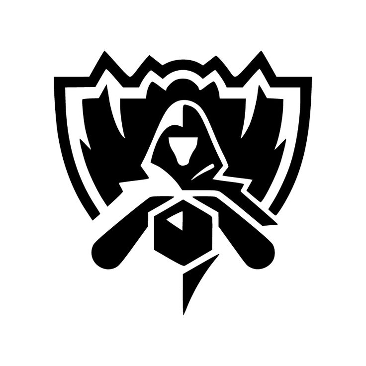

Que son los WORLDS?
El Campeonato Mundial de League of Legends, conocido como "Worlds", es el torneo anual más importante de este juego,
organizado por Riot Games.
En este evento, los mejores equipos profesionales de todo el mundo compiten durante varias semanas por la Copa del Invocador y el título de campeón mundial.
Es la culminación de la temporada de esports de League of Legends y atrae una gran atención mediática y millones de espectadores.
El formato de Worlds 2025 consta de tres fases principales: la Fase de Apertura, la Fase Suiza y la Fase Eliminatoria.
En la fase inicial, equipos de regiones menos favorecidas luchan por un lugar en la fase principal del torneo.
La fase suiza utiliza un sistema de enfrentamientos basado en el rendimiento para decidir quién avanza,
y finalmente, la fase eliminatoria es un cuadro de eliminación simple donde se disputan cuartos de final, semifinales y la gran final, todas al mejor de cinco partidas.
Worlds marca un evento histórico y emblemático en el mundo de los esports,
donde cada año se crean nuevas leyendas y se establecen momentos inolvidables para la comunidad y el deporte electrónico en general
